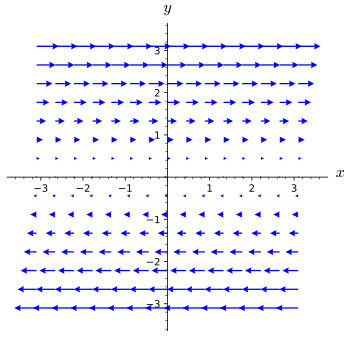
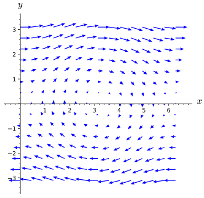
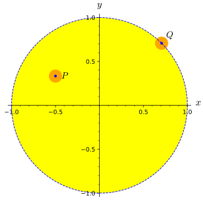
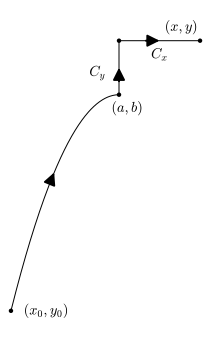
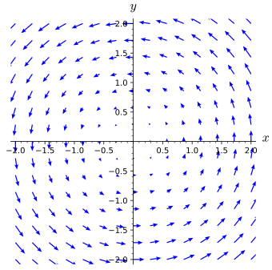
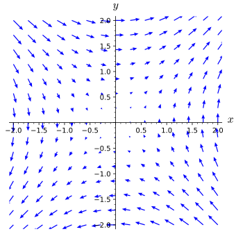

Section13.4Path-Independent Vector Fields and the Fundamental Theorem of Calculus for Line Integrals
Motivating Questions
What characteristic of a vector field \(\vF\) will make \(\int_C\vF\cdot d\vr\) have the same value for every oriented curve from a point \(P\) to a point \(Q\text{?}\)
What special properties do gradient vector fields have?
Given a gradient vector field \(\vF\text{,}\) how can we efficiently find a potential function \(f\) so that \(\vF = \grad f\text{?}\)
In Activity 13.3.4, Example 13.3.9, and Activity 13.3.5, we encountered situations where \(C_1\) and \(C_2\) are different oriented curves from a point \(P\) to a point \(Q\) and \(\int_{C_1}\vF\cdot d\vr = \int_{C_2}\vF\cdot d\vr\text{.}\) In this section, we explore vector fields which have the property that for all points \(P\) and \(Q\text{,}\) if \(C_1\) and \(C_2\) are oriented paths from \(P\) to \(Q\text{,}\) then \(\int_{C_1}\vF\cdot d\vr = \int_{C_2}\vF\cdot d\vr\text{.}\)
Preview Activity13.4.1.
In Activity 13.3.4, we considered the vector field \(\vF(x,y) = \langle y^2,2xy+3\rangle\) and two different oriented curves from \((-2,5)\) to \((3,30)\text{.}\) We found that the value of the line integral of \(\vF\) was the same along those two oriented curves.
(a)
Verify that \(\vF(x,y) = \langle y^2,2xy+3\rangle\) is a gradient vector field by showing that \(\vF = \nabla f\) for the function \(f(x,y) = xy^2 + 3y\text{.}\)
(b)
Calculate the change in the output of the scalar function \(f\) over the curves \(C_1\) and \(C_2\text{.}\) In other words, what is the difference in the output of \(f\) at the start of the curve and the end of the curve? How does this value compare to the value of the line integral \(\int_{C_1}\vF\cdot d\vr\) you found in Activity 13.3.4?
(c)
Let \(C_3\) be the line segment from \((1,1)\) to \((3,4)\text{.}\) Calculate \(\int_{C_3}\vF\cdot d\vr\) as well as \(f(3,4)-f(1,1)\text{.}\) Write a sentence that compares your answer to this part to your result for part 13.4.1.b.
Subsection13.4.1Path-Independent Vector Fields
Hopefully Preview Activity 13.4.1 has prompted you to wonder about the phenomenon of the value of a line integral depending only on the initial and terminal points of the oriented path (rather than the oriented path itself) and how a potential function comes into play. We say that a vector field \(\vF\) defined on a region \(D\) is path-independent if \(\int_{C_1}\vF\cdot d\vr = \int_{C_2}\vF\cdot d\vr\) whenever \(C_1\) and \(C_2\) are oriented paths in \(D\) such that both curves start at point \(P\) and end at point \(Q\text{.}\)
In Activity 13.3.4 and Example 13.3.9, we encountered situations where we had evidence that a vector field was path-independent. However, since the definition of path-independence requires that the value of the line integral be the same for every possible path from one point to the other (regardless of choice for the initial and final points), it doesn’t appear that verifying a vector field is path-independent is an easy task.
Fortunately, one familiar class of vector fields can be shown to be path-independent. Let \(f\colon \R^3\to \R\) be a function for which \(\nabla f\) is continuous on a region \(D\text{.}\) Suppose that \(P\) and \(Q\) are points in \(D\) and let \(C\) be a smooth oriented path from \(P\) to \(Q\) that is also contained in our region \(D\text{.}\) We consider \(\int_C\nabla f \cdot d\vr\) by fixing an arbitrary parametrization \(\vr(t)\) of \(C\text{,}\)\(a\leq t \leq b\text{.}\) Since we can write \(x\text{,}\)\(y\text{,}\) and \(z\) in terms of \(t\text{,}\) along \(C\text{,}\) the gradient of \(f\) is given by
In other words, gradient vector fields are path-independent vector fields, and we can evaluate line integrals of gradient vector fields by using a potential function.
This result is so important that it is frequently called the Fundamental Theorem of Calculus for Line Integrals, because of its similarity to the Fundamental Theorem of Calculus 2
Theorem13.4.1.Fundamental Theorem of Calculus for Line Integrals.
Let \(f\) be a function for which \(\nabla f\) is continuous on a region \(D\text{.}\) If \(P\) and \(Q\) are points in \(D\) and \(C\) is a piecewise smooth oriented path from \(P\) to \(Q\) in \(D\text{,}\) then
Suppose we need to calculate the line integral of \(\vF= \langle 2xy-2, x^2+3e^y \rangle\) over the path from \((2,0)\) to \((4,-2)\) along the curve given by \((x-2)^2=-y/2\text{.}\) If we use Theorem 13.3.6 to solve this, we would need to parameterize the curve, take a derivative of the parameterization, substitute into the line integral formula, and finally integrate the result. Fortunately, Theorem 13.4.1 allows us to be more efficient in how we approach this.
In order to use Theorem 13.4.1, we first need to verify that there exists a potential function \(f(x,y)\) such that \(\nabla f = \langle 2xy-2, x^2+3e^y \rangle\text{.}\) We will soon learn techniques in Activity 13.4.3 for finding a protential function, but for now, you should be able to verify for yourself that \(f\) will be of the form \(f(x,y) = x^2y-2x-3e^y+k\text{,}\) where \(k\) is a constant. Note that \(f(4,-2)- f(2,0)= (-32-8+3e^{-2}+k)-(0-4-3+k)= 3e^{-2}-41\text{,}\) regardless of what value we choose for \(k\text{.}\) By Theorem 13.4.1,
If we changed the path in our line integral to be any other path between \((2,0)\) and \((4,-2)\text{,}\) then the result would still be \(3e^{-2}-41\text{.}\)
(b)
If we changed the path in our line integral to be some path \(C_1\) from \((1,-1)\) to \((-1,4)\) but did not change the vector field being used, then we would only need to evaluate \(f(-1,4)- f(1,-1)\text{.}\) So for our new path \(C_1\text{,}\)
Sometimes, we know that the vector field we need to compute a line integral in is the gradient vector field of a given function, in which case evaluation of the line integral is very efficient. Before investigating how to find a potential function, we have an activity to practice applying Theorem 13.4.1 when we are given the potential function.
Activity13.4.2.
Calculate each of the following line integrals.
(a)
\(\int_C \nabla f\cdot d\vr\) if \(f(x,y) = 3xy^2 - \sin(x) + e^y\) and \(C\) is the top half of the unit circle oriented from \((-1,0)\) to \((1,0)\text{.}\)
(b)
\(\int_C \nabla g\cdot d\vr\) if \(g(x,y,z) = xz^2 - 5y^3\cos(z) + 6\) and \(C\) is the portion of the helix \(\vr(t) = \langle 5\cos(t),5\sin(t),3t\rangle\) from \((5,0,0)\) to \((0,5,9\pi/2)\text{.}\)
(c)
\(\int_C \nabla h\cdot d\vr\) if \(h(x,y,z) = 3y^2e^{y^3} - 5x\sin(x^3z) + z^2\) and \(C\) is the curve consisting of the line segment from \((0,0,0)\) to \((1,1,1)\text{,}\) followed by the line segment from \((1,1,1)\) to \((-1,3,-2)\text{,}\) followed by the line segment from \((-1,3,-2)\) to \((0,0,10)\text{.}\)
In Activity 13.3.2, we used Clairaut’s Theorem to argue that a vector field in \(\R^2\) is not a gradient vector field when \(\partial F_1/\partial y\neq \partial F_2/\partial x\text{.}\) In Preview Activity 13.4.1, you verified that a given vector field was the gradient of a particular function of two variables. Clairaut’s Theorem holds for functions of three variables. However, in that case there are six mixed partials to calculate, and thus it can be rather tedious. Activity 13.4.3 suggest a process for determining if a vector field in \(\R^3\) is a gradient vector field as well as finding a potential function for the vector field.
Activity13.4.3.
Let \(\vG(x,y,z) = \langle 3e^{y^2}+z\sin(x),6xy e^{y^2} - z,3z^2-y-\cos(x)\rangle\) and \(\vH(x,y,z) = \langle 3x^2 y,x^3+2yz^3,xz+3y^2z^2\rangle\text{.}\)
(a)
If \(\vG\) and \(\vH\) are to be gradient vector fields, then there are functions \(g\) and \(h\) for which \(\vG = \nabla g\) and \(\vH=\nabla h\text{.}\) If such functions \(g\) and \(h\) exist, what would \(g_y\text{,}\)\(g_z\text{,}\)\(h_x\text{,}\)\(h_y\text{,}\) and \(h_z\) be?
(b)
Let \(g_1(x,y,z)=3xe^{y^2}+xyz-z\sin(x)\text{.}\) Calculate \(\partial g_1/\partial x\text{.}\) Could \(g_1\) be a potential function for the vector field \(\vG\text{?}\)
(c)
Find a function \(g\) so that \(\partial g/\partial x = 3e^{y^2}+z\sin(x)\text{.}\) Find a function \(h\) so that \(\partial h/\partial x = 3x^2y\text{.}\)
(d)
When finding the most general anti-derivative for a function of one variable, we add a constant of integration (usually denoted by \(C\)) to capture the fact that any constant will become \(0\) through differentiation.
(i)
When taking the partial derivative with respect to \(x\) of a function of \(x\text{,}\)\(y\text{,}\) and \(z\text{,}\) what variables can appear in terms that become \(0\) in the partial derivative because they are treated as constants?
(ii)
What does this tell you should be added to \(g\) and \(h\) in the previous part to make them the most general possible functions with the desired partial derivatives with respect to \(x\text{?}\)
(e)
Now calculate \(\partial g/\partial y\) and \(\partial h/\partial y\) based on your choices for part 13.4.3.c. Write a few sentences to explain why this tells you that we must have
for some functions \(m_1\) and \(m_2\) depending only on \(z\text{.}\)
(f)
Calculate \(\frac{\partial g}{\partial z}\) and \(\frac{\partial h}{\partial z}\) for the functions in the part above. Notice that \(m_1\) and \(m_2\) are functions of \(z\) alone, so taking a partial derivative with respect to \(z\) is the same as taking an ordinary derivative, and thus you may use the notation \(m'_1(z)\) and \(m'_2(z)\text{.}\)
(g)
Explain why \(\vG\) is a gradient vector field but \(\vH\) is not a gradient vector field. Find a potential function for \(\vG\text{.}\)
\(\int_C \vF\cdot d\vr\) if \(\vF(x,y) = \langle 2x,2y\rangle\) and \(C\) is the line segment from \((1,2)\) to \((-1,0)\text{.}\)
Hint.
Find \(f(x,y)\) such that \(\nabla f = \vF\text{.}\)
(b)
\(\int_C \vG\cdot d\vr\) if \(\vG(x,y) = \langle 4x^3-12y\cos(xy),9y^2-12x\cos(xy)\rangle\) and \(C\) is the portion of the unit circle from \((0,-1)\) to \((0,1)\text{.}\)
(c)
\(\int_C \vH\cdot d\vr\) if \(\vH(x,y,z) = \langle H_1,H_2,H_3\rangle\) with
and \(C\) is the curve consisting of the line segment from \((1,1,1)\) to \((3,0,3)\text{,}\) followed by the line segment from \((3,0,3)\) to \((1,5,-1)\text{,}\) followed by the line segment from \((1,5,-1)\) to \((0,0,0)\text{.}\)
Subsection13.4.2Line Integrals Along Closed Curves
Recall that an oriented curve \(C\) is closed if the curve has the same initial and terminal point. A typical example of a closed curve would be a circle (with an orientation of which way to go around), but we could also consider something like the square with vertices \((1,1)\text{,}\)\((-1,1)\text{,}\)\((-1,-1)\text{,}\) and \((1,-1)\text{,}\) oriented clockwise (or counterclockwise). Recall that we sometimes use the symbol \(\oint\) for a line integral when the curve is closed and that if \(C=C_1+C_2\text{,}\) then \(\int_C\vF\cdot d\vr=\int_{C_1}\vF\cdot d\vr+ \int_{C_2}\vF\cdot d\vr\text{.}\)
Activity13.4.5.
Suppose that \(\vF\) is a continuous path-independent vector field (in \(\R^2\) or \(\R^3\)) on some region \(D\text{.}\)
(a)
Let \(P\) and \(Q\) be points in \(D\) and let \(C_1\) and \(C_2\) be oriented curves from \(P\) to \(Q\text{.}\) What can you say about \(\int_{C_1}\vF\cdot d\vr\) and \(\int_{C_2}\vF\cdot d\vr\text{?}\)
(b)
Let \(C = C_1 - C_2\text{.}\) Explain why \(C\) is a closed curve.
(c)
Calculate \(\oint_C\vF\cdot d\vr\text{.}\)
(d)
Write a sentence that summarizes what we can conclude about line integrals of \(\vF\) at this point in the activity.
(e)
Now let us suppose that \(\vG\) is a continuous vector field on a region \(D\) for which \(\oint_C\vG\cdot d\vr = 0\) for all closed curves \(C\text{.}\) Pick two points \(P\) and \(Q\) in \(D\text{.}\) Let \(C_1\) and \(C_2\) be oriented curves from \(P\) to \(Q\text{.}\) What type of curve is \(C = C_1 - C_2\text{?}\)
(f)
What is \(\oint_C\vG\cdot d\vr\text{?}\) Why?
(g)
What does that tell you about the relationship between \(\int_{C_1}\vG\cdot d\vr\) and \(\int_{C_2}\vG\cdot d\vr\text{?}\)
(h)
Explain why this shows that \(\vG\) is path-independent.
We summarize the result of Activity 13.4.5 with the theorem below. Although this theorem is not a terribly useful way to show that a vector field is path-independent, it can be a useful way to show that a vector field is not path-independent: If you can find a closed curve around which the circulation is not zero, then the vector field is not path independent.
Theorem13.4.3.
Let \(\vF\) be a continuous vector field on a region \(D\text{.}\) Suppose that \(C\) is a closed curve in \(D\text{.}\) The circulation of \(\vF\) along \(C\text{,}\) given by \(\oint_C\vF\cdot d\vr\text{,}\) is zero if and only if \(\vF\) is path-independent.
The following activity gives you a chance to reason about path-independence based purely on a graphical representation of a vector field.
Activity13.4.6.
Explain why neither of the vector fields in Figure 13.4.4 is path-independent.

A vector field in which all vectors are horizontal. The vectors are \(0\) along the \(x\)-axis, point to the right for \(y>0\) and point to the left for \(y\lt 0\text{.}\) Vectors get longer as distance from the \(x\)-axis increases.
(a)\(\vF\)

A vector field in which vectors appear to circulate in a clockwise manner around the point \((3,0)\text{.}\) The magnitude of vectors increases with the distance from \((3,0)\text{.}\) The plot shows the portion of the vector field with \(0\leq x\leq 6\) and \(-3\leq y\leq 3\text{.}\)
(b)\(\vG\)
Figure13.4.4.Two vector fields that are not path-independent.
Subsection13.4.3What other vector fields are path-independent?
tells us that given a constant \(c\) and a continuous function \(f\text{,}\) there is a unique function \(A(x)\) for which \(A(c) = 0\) and \(\frac{dA}{dx} (x) = f(x)\text{.}\) In particular, \(A(x) = \int_c^x f(t)\, dt\) is this function. We are about to investigate an analog of this result for path-independent vector fields, but first we require two additional definitions.
If \(D\) is a subset of \(\R^2\) or \(\R^3\text{,}\) we say that \(D\) is open provided that for every point in \(D\text{,}\) there is a disc (in \(\R^2\)) or ball (in \(\R^3\)) centered at that point such that every point of the disc/ball is contained in \(D\text{.}\) For example, the set of points \((x,y)\) in \(\R^2\) for which \(x^2+y^2 \lt 1\) is open, since we can always surround any point in this set by a tiny disc contained in the set (as illustrated by point \(P\) in Figure 13.4.5). However, if we change the inequality to \(x^2+y^2\leq 1\text{,}\) then the set is not open, as any point on the circle \(x^2+y^2=1\) cannot be surrounded by a disc contained in the set; any disc surrounding a point on that circle will contain points outside the set, that is with \(x^2+y^2>1\) (as illustrated by the point \(Q\) in Figure 13.4.5). We will also say that a region \(D\) is path-connected provided that for every pair of points in \(D\text{,}\) there is a path from one to the other contained in \(D\text{.}\)

The open set \(\{(x,y)| x^2+y^2 \lt 1\}\) is plotted in yellow with a point \(Q\)
Figure13.4.5.The open set \(\{(x,y)| x^2+y^2 \lt 1\}\) is plotted in yellow with a point \(Q\) on the boundary that shows why \(\{(x,y)| x^2+y^2 \leq 1\}\) is not open
Activity13.4.7.
Let \(\vF=\langle F_1,F_2\rangle\) be a continuous, path-independent vector field on an open, path-connected region \(D\text{.}\) We will assume that \(D\) is in \(\R^2\) and \(\vF\) is a two-dimensional vector field, but the ideas below generalize completely to \(\R^3\text{.}\) We want to define a function \(f\) on \(D\) by using the vector field \(\vF\) and line integrals, much like the Second Fundamental Theorem of Calculus allows us to define an antiderivative of a continuous function using a definite integral. To that end, we assign \(f(x_0,y_0)\) an arbitrary value. (Setting \(f(x_0,y_0)=0\) is probably convenient, but we won’t explicitly tie our hands. Just assume that \(f(x_0,y_0)\) is defined to be some number.) Now for any other point \((x,y)\) in \(D\text{,}\) define
where \(C\) is any oriented path from \((x_0,y_0)\) to \((x,y)\text{.}\) Since \(D\) is path-connected, such an oriented path must exist. Since \(\vF\) is path-independent, \(f\) is well-defined. If different paths from \((x_0,y_0)\) to \((x,y)\) gave different values for the line integral, then we would not be sure what \(f(x,y)\) really is.
To better understand this mysterious function \(f\) we’ve now defined, let’s start looking at its partial derivatives.
(a)
Since \(D\) is open, there is a disc (perhaps very small) surrounding \((x,y)\) that is contained in \(D\text{,}\) so fix a point \((a,b)\) in that disc. Since \(D\) is path-connected, there is a path \(C_1\) from \((x_0,y_0)\) to \((a,b)\text{.}\) Let \(C_y\) be the line segment from \((a,b)\) to \((a,y)\) and let \(C_x\) be the line segment from \((a,y)\) to \((x,y)\text{.}\) (See Figure 13.4.6.) Rewrite \(f(x,y)\) as a sum of \(f(x_0,y_0)\) and line integrals along \(C_1\text{,}\)\(C_y\text{,}\) and \(C_x\text{.}\)

An oriented curve from \((x_0,y_0)\) to \((x,y)\text{.}\) It begins with a curved arc from \((x_0,y_0)\) to \((a,b)\) and then proceeds vertically from \((a,b)\) to \((a,y)\) and then horizontally to \((x,y)\text{.}\)
Figure13.4.6.A piecewise smooth oriented curve from \((x_0,y_0)\) to \((x,y)\text{.}\)
(b)
Notice that we can parametrize \(C_y\) by \(\langle a,t\rangle\) for \(b\leq t\leq y\text{.}\) Find a similar parametrization for \(C_x\text{.}\)
(c)
Use the parametrization from above to write \(\int_{C_y}\vF\cdot d\vr\) and \(\int_{C_x}\vF\cdot d\vr\) as single variable integrals in the manner of Section 13.3. Use the fact that \(\vF(x,y) = \langle F_1(x,y),F_2(x,y)\rangle\) to express your integrals in terms of \(F_1\) and \(F_2\) without any dot products.
(d)
Rewrite your expression for \(f(x,y)\) using a line integral along \(C_1\) and the single variable integrals above.
(e)
Notice that your expression for \(f(x,y)\) from the previous part only depends on \(x\) as the upper limit of an single variable integral. Use the Second Fundamental Theorem of Calculus to calculate \(f_x(x,y)\text{.}\)
(f)
To calculate \(f_y(x,y)\text{,}\) we continue to consider a path \(C_1\) from \((x_0,y_0)\) to \((a,b)\text{,}\) but now let \(L_x\) be the line segment from \((a,b)\) to \((x,b)\) and let \(L_y\) be the line segment from \((x,b)\) to \((y,b)\text{.}\) Modify the process you used to find \(f_x(x,y)\) to find \(f_y(x,y)\text{.}\)
(g)
What can you conclude about the relationship between \(\grad f\) and \(\vF\text{?}\) What does this tell you about \(\vF\) beyond that it is path-independent and continuous?
We summarize the result of Activity 13.4.7 below. Much like the Second Fundamental Theorem of Calculus, which tells us that a function is an antiderivative for another function, but leaves the antiderivative in terms of a definite integral, this theorem tells us that a function is a potential function for a vector field, but the definnition of the potential function is in terms of a line integral.
Theorem13.4.7.Path-Independent Vector Fields.
If \(\vF\) is a path-independent vector field on an open, path-connected region \(D\text{,}\) then \(\vF\) is a gradient vector field on \(D\text{.}\) Furthermore, if \(P\) is a point in \(D\) and \(f(P)\) is fixed, then for a point \(Q\) in \(D\) and an oriented curve \(C\) from \(P\) to \(Q\) in \(D\text{,}\) the function
with the analogous result holding if \(f\) is a function of three variables.
A vector field is path-independent if and only if the circulation around every closed curve in its domain is \(0\text{.}\)
If a vector field \(\vF\) is path-independent, then there exists a function \(f\) such that \(\nabla f =
\vF\text{.}\) That is, \(\vF\) is a conservative or gradient vector field.
Exercises13.4.5Exercises
1.
Let \({\nabla f} = -4xe^{-x^{2}}\sin\!\left(5y\right)\,\vec i + 10e^{-x^{2}}\cos\!\left(5y\right)\, \vec j\text{.}\) Find the change in \(f\) between \((0,0)\) and \((1,\pi/2)\) in two ways.
(a) First, find the change by computing the line integral \(\int_C \nabla f\cdot d\vec r\text{,}\) where \(C\) is a curve connecting \((0,0)\) and \((1,\pi/2)\text{.}\)
The simplest curve is the line segment joining these points. Parameterize it:
with \(0\le t\le 1\text{,}\)\(\vec r(t) =\)\(\vec i +\)\(\vec j\)
So that \(\int_C\nabla f\cdot d\vec r = \int_0^1\)\(dt\)
Note that this isn’t a very pleasant integral to evaluate by hand (though we could easily find a numerical estimate for it). It’s easier to find \(\int_C\nabla f\cdot d\vec r\) as the sum \(\int_{C_1}\nabla f\cdot d\vec r + \int_{C_2}\nabla f\cdot d\vec r\text{,}\) where \(C_1\) is the line segment from \((0,0)\) to \((1,0)\) and \(C_2\) is the line segment from \((1,0)\) to \((1,\pi/2)\text{.}\) Calculate these integrals to find the change in \(f\text{.}\)
\(\int_{C_1}\nabla f\cdot d\vec r =\)
\(\int_{C_2}\nabla f\cdot d\vec r =\)
So that the change in \(f = \int_C\nabla f\cdot\vec r =
\int_{C_1}\nabla f\cdot d\vec r + \int_{C_2}\nabla f\cdot d\vec r =\)
(b) By computing values of \(f\text{.}\) To do this,
First find \(f(x,y) =\)
Thus
\(f(0,0) =\) and \(f(1,\pi/2) =\) ,
and the change in \(f\) is .
2.
Consider the vector field \(\mathbf{F} \left( x, y, z \right) = \left( 3 z+ 3 y\right)
\mathbf{i} + \left( 2 z+ 3 x \right) \mathbf{j} + \left( 2 y+ 3 x \right)
\mathbf{k}\text{.}\)
a) Find a function \(f\) such that \(\mathbf{F} = \nabla f\) and \(f(0,0,0) = 0\text{.}\)
\(f(x,y,z) =\)
b) Suppose C is any curve from \(\left( 0, 0, 0 \right)\) to \(\left( 1, 1, 1 \right).\) Use part a) to compute the line integral \(\int_{C} \mathbf{F} \cdot d\mathbf{r}\text{.}\)
The line integral of \(\vF=\langle yz,xz,y\rangle\) along the helix of radius of 3 given by \(\vr(t) =\langle
3\sin(t), 3\cos(t), \frac{4}{\pi} t\rangle \) as \(-\pi\leq
t\leq \pi\text{.}\)
(b)
The line integral of \(\vF=\langle \sin(yz),
xz\cos(yz)-z\sin(y),xy\cos(yz)+\cos(y)\rangle\) along the line segment from \((0,\pi,3)\) to \((2,-1,2\pi)\text{.}\)
(c)
The integral\(\int_C y^2\, dx +2xy\, dy\) where \(C\) is the parabolic path along \(y=x^2\) from \((-1,1)\) to \((4,16)\text{.}\)
4.
Let \(\vF=\langle F_1,F_2,F_3\rangle\text{,}\) where \(F_1=
3xy^2+z\) and \(F_3 = yz^2+\cos(z)\text{.}\)
(a)
Give a component function \(F_2\) such that \(\vF\) is a gradient vector field.
(b)
Give a component function \(F_2\) such that \(\vF\) is not a gradient vector field.
5.
This exercise focuses on reasoning graphically about line integrals and vector fields.
(a)
Find a closed curve on which the line integral of the vector field pictured below will not be zero. Be sure to clearly define your curve and explain why the line integral over your curve is non-zero.

Figure13.4.8.A vector field
(b)
Explain why you think the following vector field is path independent or not.

A vector field in which vector magnitudes increase as distance from the origin increases. Vectors are oriented as if they follow hyperbolas with asymptotes \(y=x\) and \(y=-x\text{.}\) Vectors above both asymptotes or below both asymptotes result in counterclockwise rotation. The other vectors result in clockwise rotation.
Figure13.4.9.Another vector field
6.
Compute \(\int_C ye^z\, dx +xe^z\, dy+xye^z\, dz\) where \(C\) is given by \(\langle t^2,t^3,t-1\rangle\) for \(1\leq t\leq 2\text{.}\)
Subsection13.4.6Notes to Instructors and Dependencies
This section is long, but important. To do all the activities, you will need multpile 50-minute class periods. One way to facilitate this would be to treat Activity 13.4.4 as if it were a preview activity and have students work on it before the second class meeting. You could also opt to de-emphasize finding potential functions and omit that activity.
Activity 13.4.7 is also rather long. We have arranged the subsection by placing Theorem 13.4.7 after the activity so as to not spoil the discovery to which the activity builds. This activity can be skipped without adversely impacting the remainder of the chapter. However, if choosing to omit Activity 13.4.7, you may wish to specifically point out the culminating theorem to students.